Central Manager and Isolation Appliance Administrator Guide
Introduction
This guide outlines the interface and related features used to control the Menlo Security Central Manager and Isolation appliances. The following topics are covered:
The guide assumes that the Central Manager has already been installed and configured. For details, refer to ova_deployment.dita.
Review System and Appliance Status
The Central Manager appliance Status panes provide current information about the operational status of all managed appliances and any issues present. The following panes are provided:
System Health: Lists the number of appliances running, all appliance groups, and a list of current issues. Use the Actions menu to perform an action on the appliance.
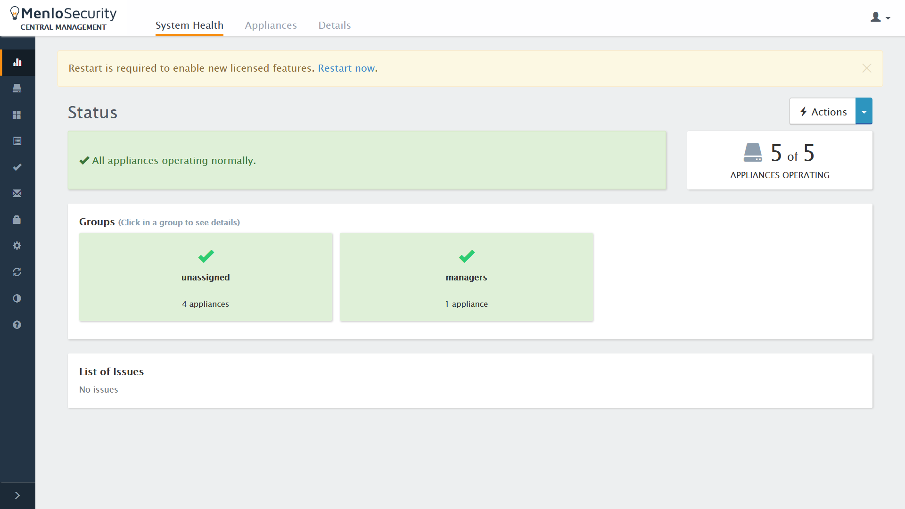The available Actions include:
Export Support Bundle: Export a set of data (logs and key system statistics) for troubleshooting.
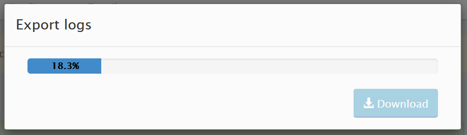Upload Support Bundle: Upload to the Menlo Upload server. You will need to enter your Support Ticket # and then wait for the upload to complete.
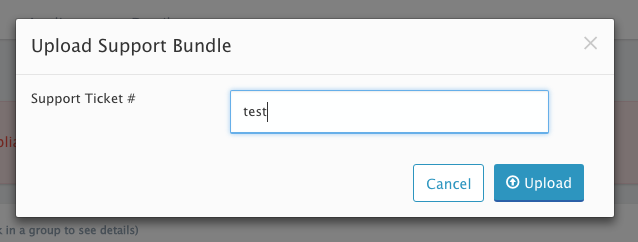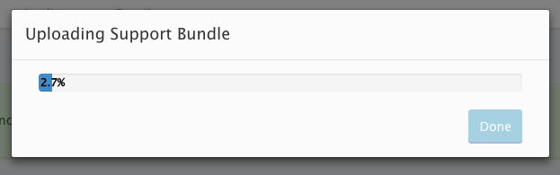Export Settings: Export the full set of settings. You are asked to enter a password to protect the settings file before the file can be downloaded.
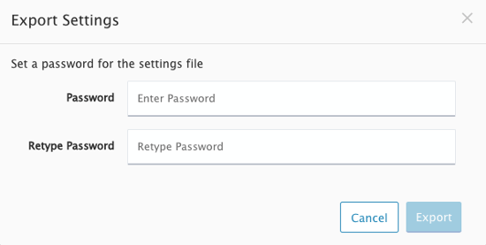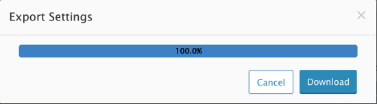Import Settings: Import the full set of settings. You must enter the settings file password to import the file. Note that all current configuration is replaced and the system is rebooted during import.
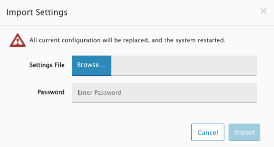Console: Display the Command Line Interface (CLI) console for basic configuration and troubleshooting. See cli.dita for details.
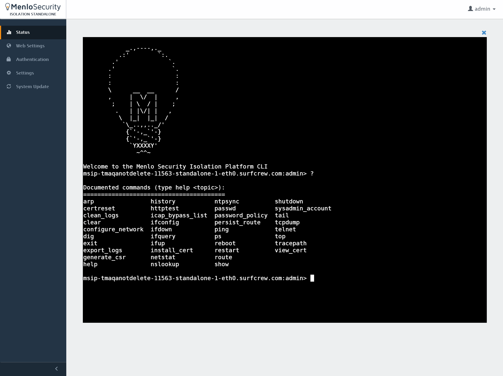
Note
The Firefox browser has a known limitation when using the Firefox browser that prevents use of the hyphen (-) and underscore (_) keys. See GitHub shellinabox bug for details. A workaround for this issue is to open the onscreen keyboard from the CLI's context menu and use that to enter these characters.
Restart: Restart the system services.
Reboot: Reboot the entire appliance.
Shut Down: Shuts down the appliance.
Appliances: Displays the following information for each appliance: hostname, type, assigned group, version, CPU usage, RAM usage, Disk status, and number of isolated browsers. Use the Group Appliances pull-down menu to group appliances by name or service domain.
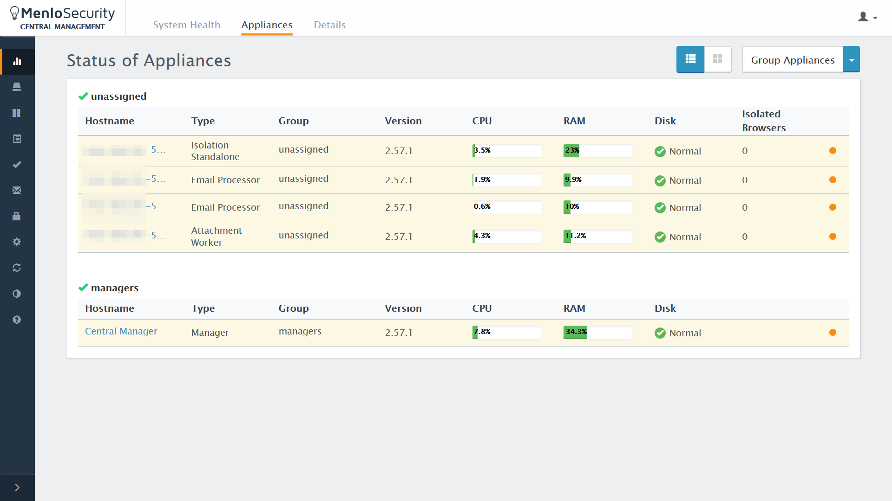Details: Displays detailed information about the appliance selected from the menu at the top right. This can vary slightly based on the type of appliance. Information includes CPU usage, RAM usage, and Disk status. In some cases, such as a Web Isolation system, the Disk status is divided into Operating System, System Logs and File Inspection Service (disk which is used to temporarily process documents during isolation and relevant only for this type of appliance). Menlo Security can assist in changing the storage values or debugging issues if these values change from Normal (to Warning or Alert). Click the Login to Appliance button to login and manage the appliance from the appliance Dashboard.
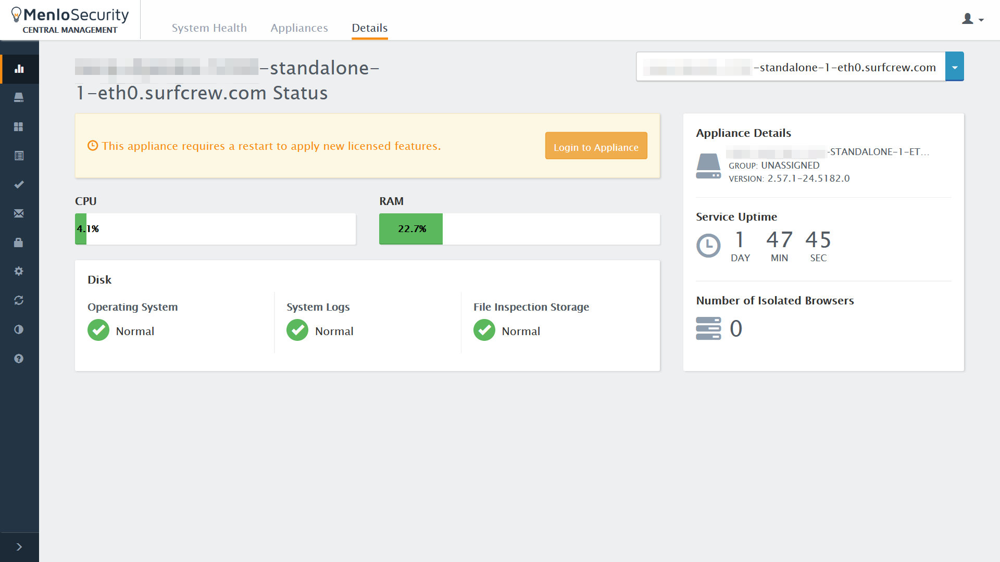
Healthcheck URL
The healthcheck URL provides appliance health status via HTTP response codes. This may be useful if you use an integrated product (e.g., BlueCoat) that relys on healthcheck codes to manage isolation nodes. If an unexpected HTTP response is received (anything other than 200), the isolation node can be taken out of the forwarding group.
Prior to any appliance upgrades, please update the healthcheck URL string to the following:
GET /healthcheck/?status=1 HTTP/1.1\r\nConnection: Close\r\n\r\n
Valid responses:
200: GO State400: STOP State (Appliance is in Maintenance mode or there are issues on the Dashboard)
Managing Appliances, Groups, Templates, and Updates
The Management panes allow you to add or delete appliances managed by the Central Manager. The Central Manager also provides a Configuration Templates feature that applies a user-defined set of networking and logging settings to selected appliances with a simple publish action.
You can also enact certain management actions on multiple appliances at once (basic actions like reboot, download and install updates, and perform rollbacks).
Managing Appliances
Use the Manage Appliances pane (Management -> Appliances) to add, delete, assign templates, or group appliances. To delete, assign a template, or group an appliance, select it using the checkbox and then use the pulldown menu for grouping or use the appropriate button to Assign Template or Delete it.
To add an appliance:
Open the Manage Appliances pane.
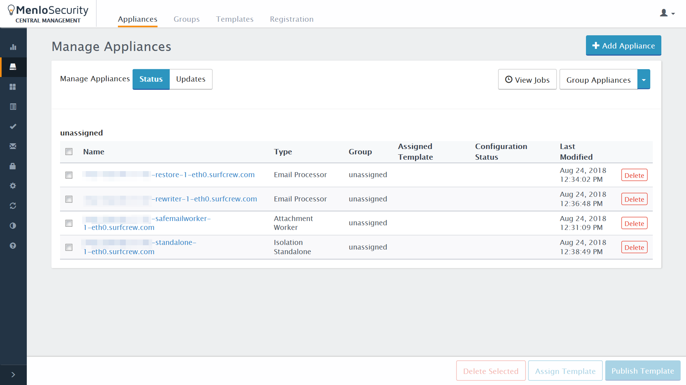Click the Add Appliance button.
Enter the appliance Hostname and click Next. The Port is provided for reference and cannot be edited.
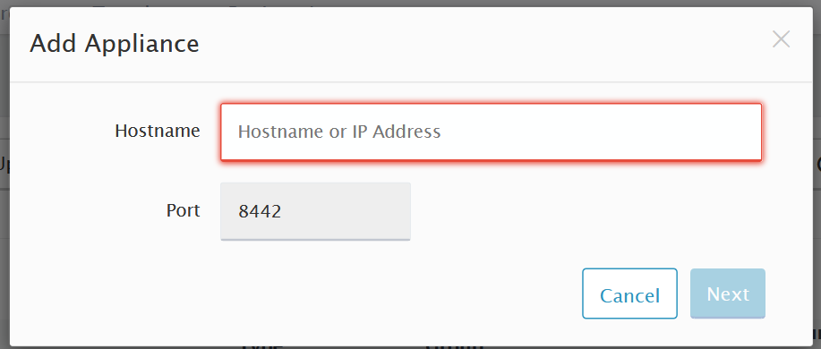Confirm the appliance certificate and click Next.
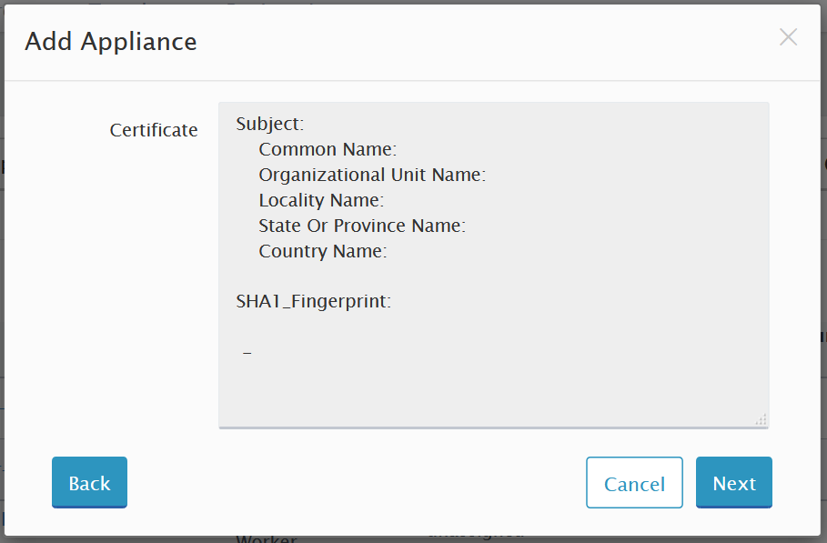Enter the admin username and password, and then click Add Appliance. The appliance appears in the list on the Manage Appliances pane.
Managing Groups
This pane provides a list of all appliance groups. An admin can group appliances so their cluster type and cookie storage policy is consistent across all appliances in the group. The group name is also displayed on the Manage Appliances pane for your reference.
To create a group:
Open the Manage Groups pane (Management -> Groups).
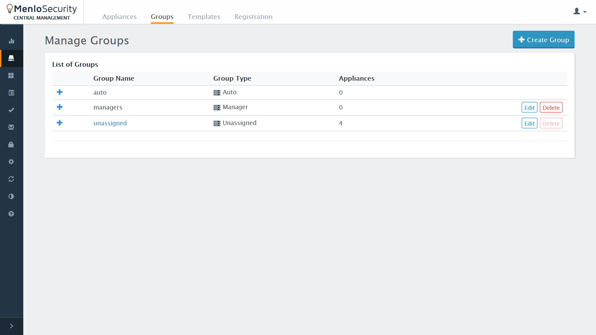Click the Create Group button.
Enter a name in the Group Info tab. The Description is optional. Use the Type toggle to define the group as a Cluster or Non Cluster (Auto) type.
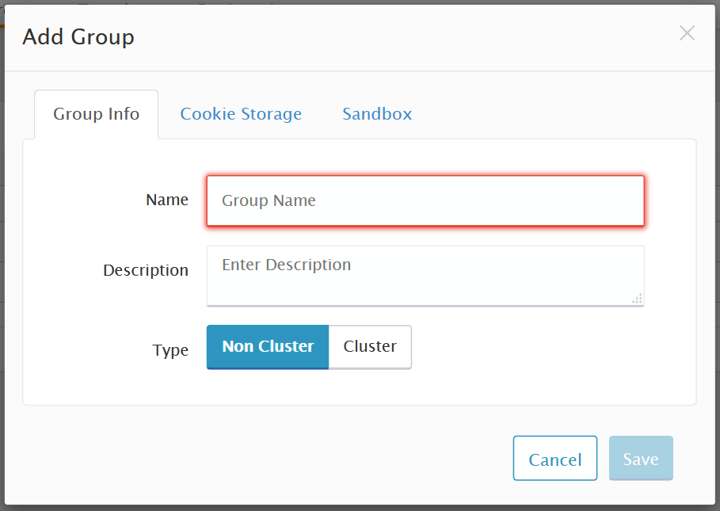If you wish to enable NFS cookie storage for the group, click the Cookie Storage tab and set the toggle to Enable. You will then be able to enter the IP address and Mount Location in this tab.
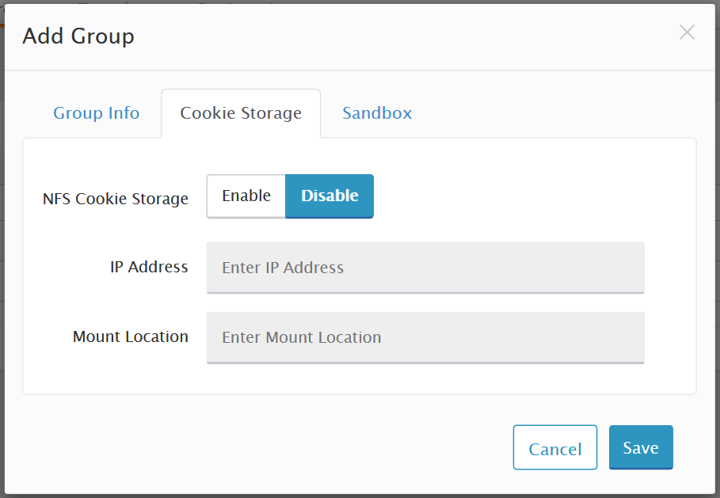Click the Save button to save the group. The new group appears in the Manage Groups pane list. Once appliances are added to a group, you can click the + icon on the left of each group name to view the appliance names nested below the group.
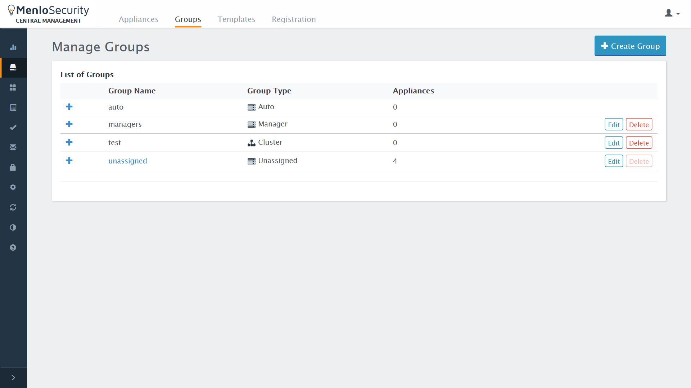
Managing Templates
This pane provides a list of all appliance templates. The templates allow an admin to easily configure network settings and logging, as well as to set up special user or group category rules. In this way identical settings are published to all appliances assigned that template, and the Central Manager performs heartbeat checks to ensure all appliances remain up-to-date with the latest values in the template.
Create Template
To create a template and assign it to an appliance:
Open the Configuration Templates pane (Management -> Templates).

Click the Create Template button.
A Create Configuration Template window opens to the Info tab. Select the appropriate Appliance Type for the template and then enter a Template Name name. The following appliance types are available:
Isolation Standalone: Single system which has both a proxy path as well as isolation path (hosts the disposable virtual containers for isolated browsing sessions). This can be managed directly or with the Central Manager.
Isolation Master: This system is the proxy path through the MSIP. It can make the decision to send through proxy (itself) or through one to many Isolation Workers (systems which contain the Disposable Virtual Containers).
Isolation Worker: This is a system which loads and runs Disposable Virtual Containers for the isolated web sessions of end users. Adding many of these workers allows the entire solution to scale out for service provider or very large enterprise load handling.
Email Processor: This is a node which can be set to transform URLs in email isolation (change the incoming URLs via email to point to the MSIP platform) or restore them on the way out of an organization (i.e., change back to the original URL so people receiving a forwarded message don’t have broken links).
Attachment Worker: This is a node which can be used to analyze email attachments for malware, isolate or block attachments, and generate Safe PDF versions of attachments. Email Processor nodes will automatically find and load balance between any Attachment Worker appliances in the same Central Manager appliance group.
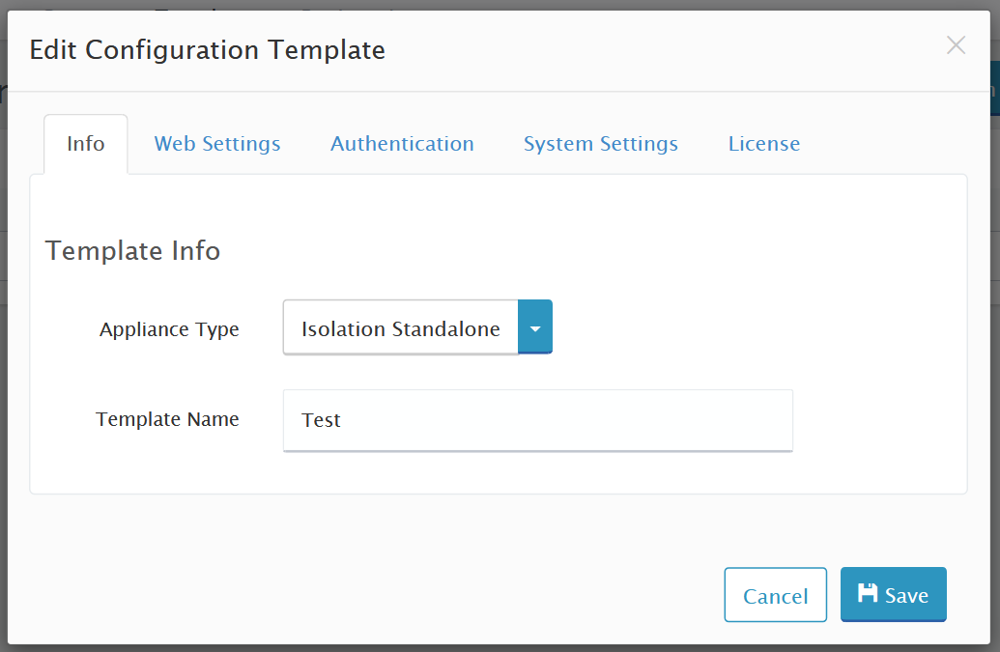Use the Web Settings tab (or Email Settings for Email Processor templates) to select the web/email isolation settings that will be managed by the central manager.
Figure 8. Web Settings Tab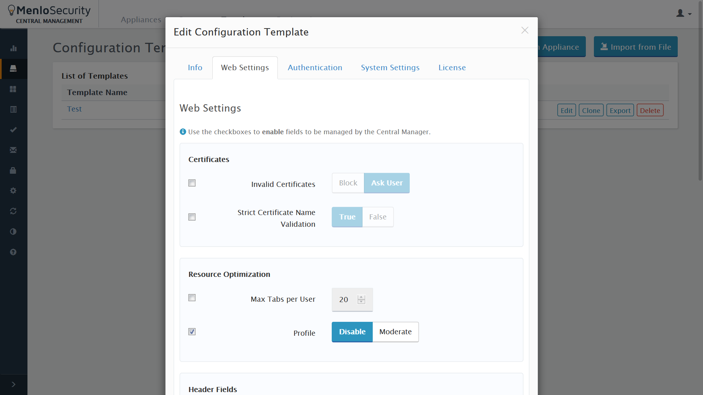Figure 9. Email Settings Tab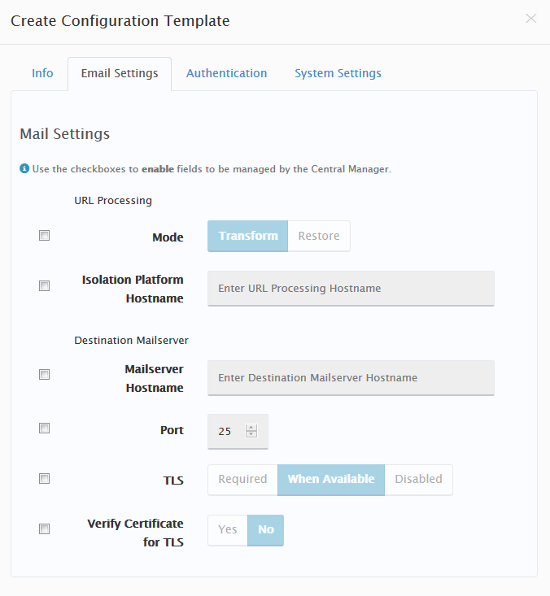Note
The Web Settings tab now includes a Profile setting that can be used to optimize resources (idle time) for users. Check the checkbox and set to "Moderate" to use optimization, or leave it as "Disabled" (default).
Use the Authentication tab to select authentication settings (AD, SAML, Users and Admin) that will be managed by the central manager.
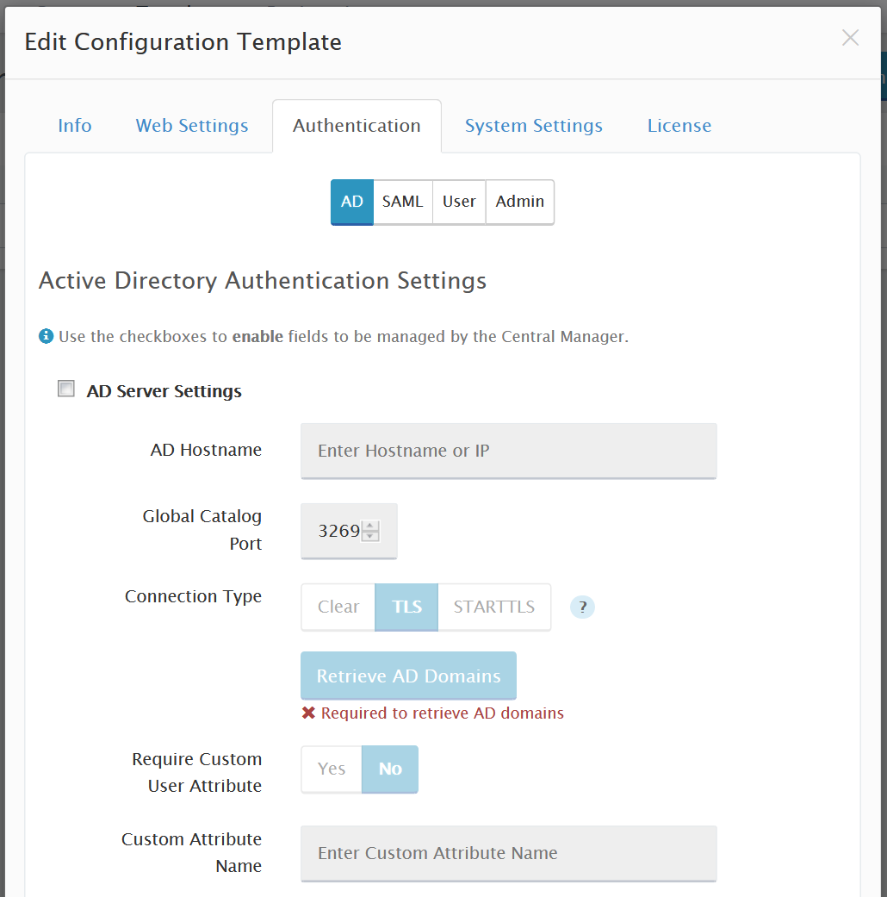Use the System Settings tab to select other appliance system settings that will be managed by the central manager. This includes the following:
Network: Appliance network settings (nameserver and upstream internet proxy). See cm-admin-Network.dita.
Service: Login host. This is either the appliance FQDN or a special domain which maps to DNS/LoadBalancing. Refer to cm-admin-Service.dita and ova_deployment.dita for more information.
Proxy (Web Isolation only): The Proxy ports which will be used for the service (i.e., what the browsers or downstream chaining device will connect to). See cm-admin-Proxy.dita.
Access Control: Controls services allowed to manage the infrastructure and internal management communications, as well as the services that can connect to Menlo Security (e.g., services that allow email processors to send email to the Menlo Security Transform/Restore systems). See cm-admin-AccessCtrl.dita.
Logs and Alerts: User session and system log hosts, protocol, port number, and log format. See cm-admin-LogsAlerts.dita.
Time: Configures the server timezone and time format. See cm-admin-Time.dita.
CA Certificates: Enables certificate management from the template. See cm-admin-CACert.dita.
Forensic Archive (Web Isolation only): Configures the archiving of files being accessed by users to a remote scp (secure copy) server using public key exchange. Files being downloaded from isolated sites will be zipped and archived to this server. For security, the scp server should be write-only (disallowing file downloads). See cm-admin-ForensicArchive.dita.
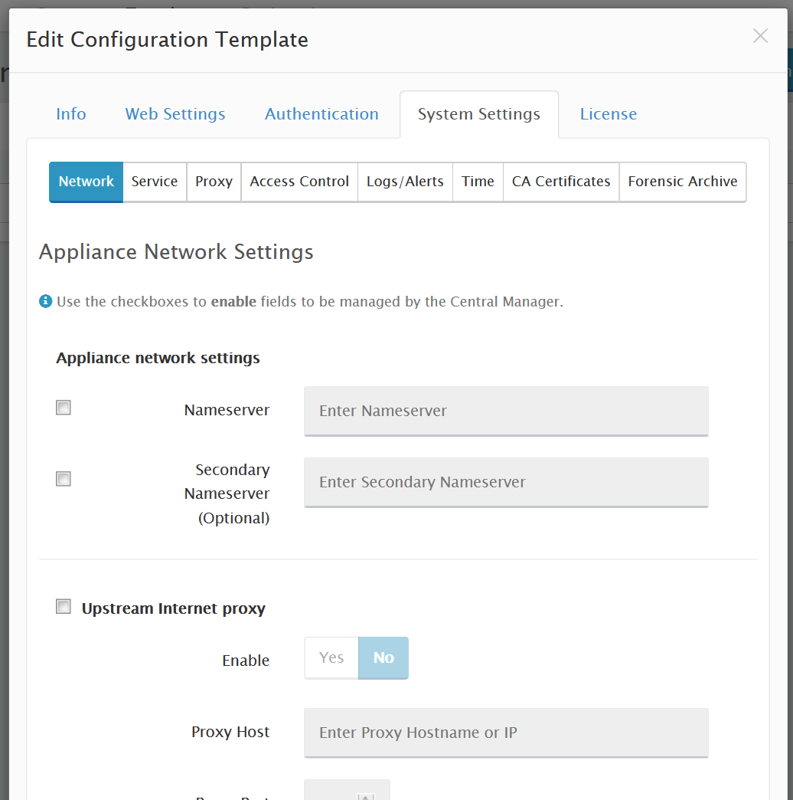Use the License tab to manage the license using the central manager.
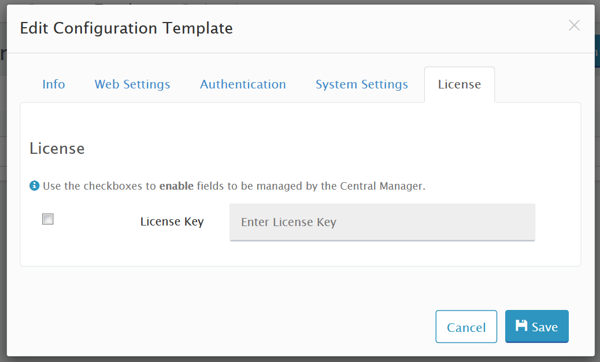Click the Save button to save the template. The new template appears in the list.
Return to the Manage Appliances pane and click the checkbox for the appliance that will use the template.
Click the Assign Template button.
Click the Publish button to apply the configuration template to the appliance.
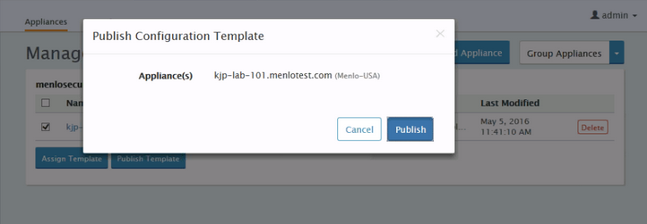After the template is successfully published, the Configuration Status (In sync with template) is displayed in the list.
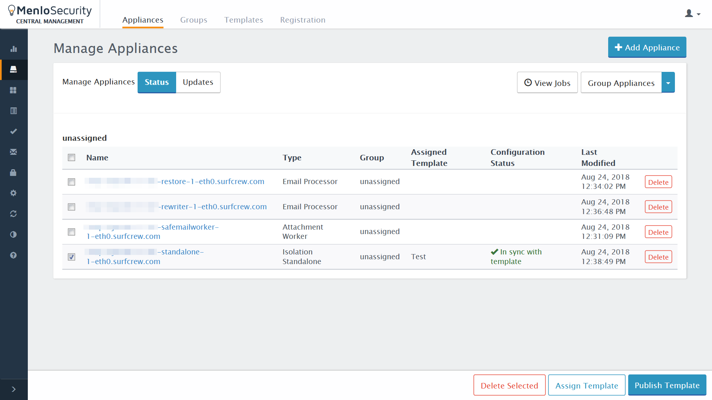
Import Template
If an appliance already has all the desired settings that should be populated to other appliances, use the Import from Appliance button to save those settings in a new configuration template.
If the desired settings have been exported from an appliance into a file, use the Import from File button. Then browse to the file location and select Next to save those settings into the configuration template.

Clone and Edit Templates
You can also select a template and click the Clone button to copy it; then make modifications to the template and save it under a new name. To modify a saved template, click the Edit button and click the Save button to save changes. As soon as a change to the template is made, the appliance Configuration Status warns the user that the appliance is out of sync.
Export Templates
If you wish to export the template to a file that can be used elsewhere, click the Export button next to the desired template to save it to a location of your choice.
Assign Templates
To view the assigned templates for each appliance, open the Manage Appliances pane (Management -> Appliances). Each appliance is listed under the Status tab.
If you wish to assign a saved template to one or more appliances:
Check the checkbox(es) associated with those appliances.
Press the Assign Template button.
Select the desired template and save changes. Note that the template is not published until the Publish Template action is complete.
Managing Updates
Use the Manage Appliances pane (Management -> Appliances) to perform centralized updates to one or more appliance at one time. You can also rollback to a previous installation and view current jobs for all appliances from this pane.
Centralized Appliance Image Downloads
Note
The Central Manager checks the Menlo Security updates server for any available upgrades based on the license configured for an appliance. If any build is outdated, an "Update Available" message appears on the Status column for an appliance.
To download updates for one or more appliances:
Select the desired appliance(s) from the Manage Appliances Updates pane (Management -> Appliances -> Updates) by checking the relevant checkbox(es).
Press the Download Image button.
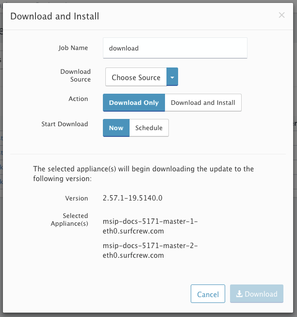Select the following in the window that appears:
Download Source: Source for the download package (Menlo Security Cloud, CMR, or Peer appliance). The Menlo Security Cloud source pulls the package from the Menlo Security Updates server. Peer and CMR obtain the package from the configured peer or CMR appliance.
Note
If the CMR or Peer appliance do not yet have the image configured for download, it will first download the image to the source (from Menlo Security Cloud) and then distribute it to the selected appliances.
Start Download: Select the download time: Now or Schedule (select desired date/time).
Action: Desired action: Download Only or Download and Install. If Download and Install is selected, the following additional parameters appear: Install (now or schedule a time for install), Simultaneous Installations (number of simultaneous installations allowed), Action When Installation Fails (action to take if an install fails -- continue or stop).
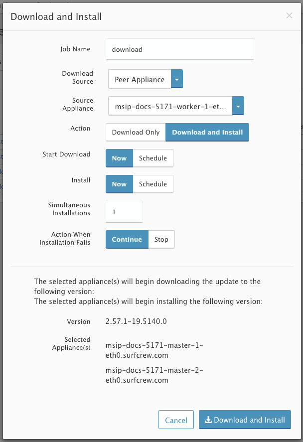
Press Download or Download and Install to download the image. The job runs either immediately or when scheduled.
Centralized Appliance Updates Installation
If an image was downloaded earlier, select the desired appliance(s) and press the Install button to run the install job. Note that if multiple appliances are selected, all must have the same version downloaded for the job to run. If there are different install versions, the installations can be run separately on the appliances. A warning is issued if any appliance runs an install of an out-of-date version.
Centralized Installation Rollback
Select the Rollback Image button to roll back an installation to a previously installed version on an appliance. You can run this action on several appliances, but all appliances selected at one time must have a common version that they are rolling back to.
You can schedule a rollback for a specific date/time and also decide how many appliances can be rolledback at the same time.
Centralized Appliance Actions
The following actions can be performed on one or more appliances in a single step:
Reset
Reboot
Shutdown
Enter Maintenance Mode
Exit Maintenance Mode
To perform any of these (e.g., "enter maintenance mode"):
Select the desired appliance(s) from the Manage Appliances Updates pane (Management -> Appliances -> Updates) by checking the relevant checkbox(es).
Press the Actions button.
Select the desired action from the menu that appears.
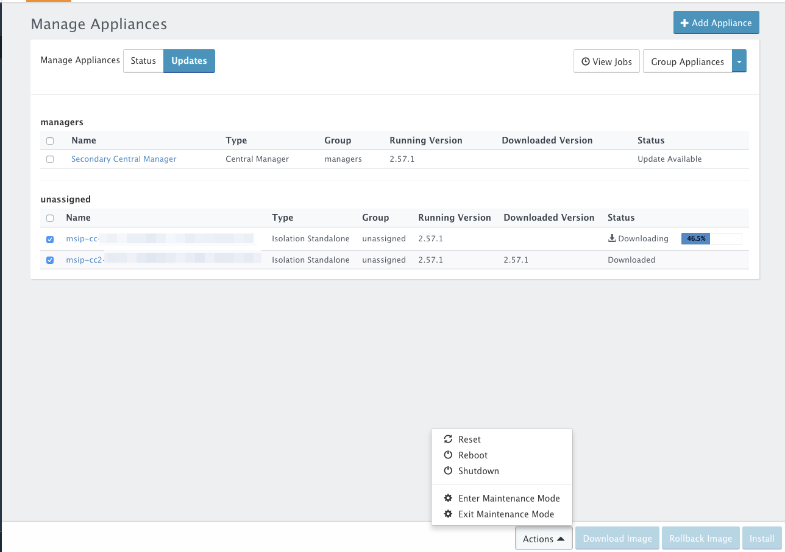Press Confirm to perform the action for the appliances listed in the window that appears.
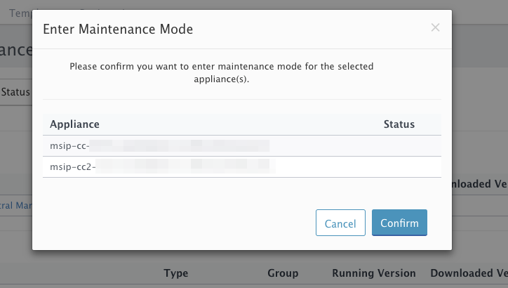
Note
A graceful shutdown of the centralized appliance may take up to five (5) minutes.
Centralized Appliance Jobs Log
All of the centralized update jobs (download image, install, rollback) are posted to a Jobs Log (Management -> Appliances -> Updates -> View Jobs).

The icon next to a job name toggles between - and +. Press + to expand the job to view all tasks associated with it.
If desired, you can cancel any active or scheduled jobs from the Jobs Log window. If the job being cancelled is in the middle of a task, the current task finishes before the cancellation takes effect (all further tasks are not run).
Managing Appliance Registration
The Appliance Registration pane (Management -> Registration) allows you to define a secret key used when registering a web or email appliance with the Central Manager.
There are two options to register a web or email appliance with the Central Manager:
Add the appliance using the Central Manager (Management -> Appliances -> Add Appliance). This step is performed after the web or email appliance is on the network (has already been deployed via VM/OVA process).
Have the web or email appliance register itself automatically with the Central Manager as part of the VM/OVA deployment process. This is useful when you have different teams working with the product. For example, a VMware Admin who will do the web or email VM appliance deployments independently of a security team managing the Menlo Security policy.
The secret key is required if you are doing Option 2 above. You will need to set Enable Trust Secret to Yes and enter your key below. Provide the key to the administrator deploying the VM/OVA so they can insert it during that process.
Web and Email Policy
Depending on your deployment you may have Web Policy and/or Email Policy panes present in the Central Manager. These panes are the same if the system is in the Cloud or On-Prem. These panes will be used to configure all appliances managed by the Central Manager.
Refer to web_admin_essentials.dita to understand the design of the Menlo Security Web policy. This includes topics like exception precedence, types of rules (threat vs. category), SSL inspection, and document handling.
Refer to email_admin_essentials.dita to understand the design of the email URL re-writing rules and whitelisting process.
Manage Authentication
The Authentication panes configure the policies used to manage Lightweight Directory Access Protocol (LDAP) and Security Assertion Markup Language (SAML) authentication for users and admins. The administrator can use these panes to associate the authentication provider (LDAP or SAML) independently to users or admins.
One possible scenario is:
All users in the company will access the MSIP via "anonymous" or "x-authenticated-user" settings if chaining from an existing device (e.g., Forcepoint).
The MSIP admin requires Active Directory group membership and a password to set the policy inside the MSIP Web GUI.
To configure the MSIP, perform the following steps:
Open the AD pane (Authentication -> AD).
Enter the Active Directory LDAP Authentication Settings to get the authentication provider working.
Open the User pane and set Authentication Method to "None" and Get Identity from X-Authenticated-User Header to "Yes" to allow Menlo Security to accept the user from the downstream device.
Open the Admin pane and set Enable to the desired authentication provider. Then enter the admin group name in the Administrator Group field (e.g., "Menlo-admins").
AD Authentication Settings
Use this pane to configure the Active Directory authentication settings and Custom Attribute names.
SAML
The following options are available for Single Sign-On:
SAML Provider: Select the SAML provider (ADFS or Other) from the pull-down menu.
SAML 2.0 Endpoint: Enter the Identity provider URL in this field.
Service Identifier (Issuer): Enter the Identity provider Entity ID in this field.
X.509 Certificate: Copy the X.509 Base64 encoded certificate (.pem file) into this field.
Additional Certificates: Select to add additional certificates. When more than one certificate is provided, the SAML response is validated using both certificates, allowing for smooth rollover during certificate transition.
Generate Signed SAML Requests: Set to Yes to generate signed SAML requests.
SAML Static Entity Enabled. Set to Yes to enable a static authenticator.
Note
If you have multiple certificates and wish to remove one, select the Remove Certificate button under the certificate to remove it.
Admin
The following controls are provided for Administrator Authentication:
External Administrator Authentication: Enables/Disables Active Directory authentication for the administrator using LDAP or SAML. You can also enter the Authorization Group name here.
Session Settings: Controls the amount of inactive time allowed before the admin portal session will time out. This can be set to any integer from 1 to 1440 (minutes). If no timeout is configured, the following default values are used:
Central Manager: 30 minutes
Isolation Master/Worker: 60 minutes
Admin Roles
Use the Admin Roles pane to add and manage roles that will control access to MSIP administrator privileges.
To add a new admin role:
Click the Add Role button. A blank Add Admin Role window opens.
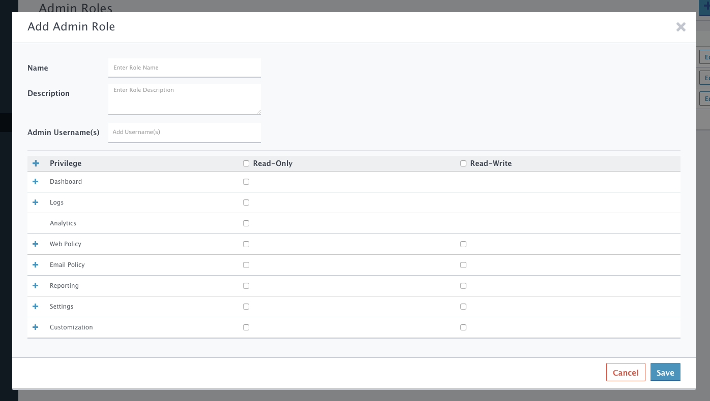Enter a unique Name and (optional) Description for the new role.
Enter the users in the Admin Usernames box. The role maps to the admin username (email). SAML group support will be enabled in future releases for users with SAML/SSO.
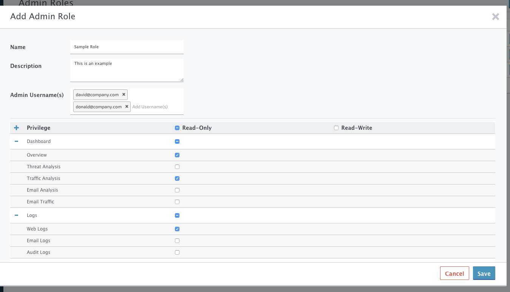Use the checkboxes in the Privilege table at the bottom to configure the privileges available when the user(s) log into the MSIP. These mirror the tabs available on the left side of all MSIP console screens. In the example above, users
david@company.comanddonald@company.comwill only have read-only access to the Overview and Traffic Analysis panes from the Dashboard tab. They will also be able to view the Web Logs pane from the Logs tab.Note
Use the + and - icons to expand and contract the list. This allows you to set a more granular sub-tab policy, if desired.
When ready, click the Save icon to save the new role. Click Continue to confirm the save. Saved changes will be applied the next time the user logs in.
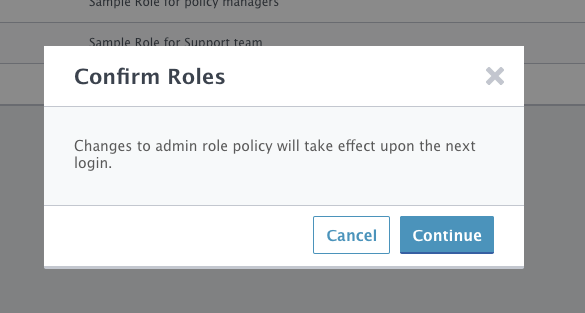For example, the user
david@company.comwill now see only the following tabs on the left side the next time he logs in.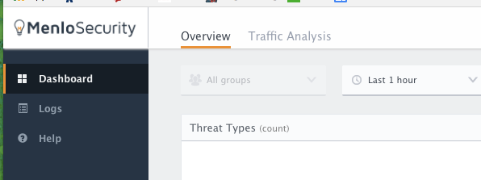
Note
All roles are additive, excluding the default role. If a user has multiple roles, their privileges are the union of all the roles (except for the default role). If the admin is not a member of any of the defined roles, they will have the privleges given to the default role.
User (Isolation Master only)
Use this pane to set a user authentication method and then define the authentication settings for web and/or email. This pane is used only in web/email isolation master appliances.
Configuring Settings
Use the Settings panes to configure networking, service settings, logging, and user management in the Central Manager appliance. The panes are described below.
Network
Use the Network Settings pane to configure the appliance network settings (DHCP or Static IP).
You can also configure the Upstream Internet proxy in this pane if you are in a chaining situation with another proxy between Menlo Security and the internet. In this situation you should add the CA certificate for the proxy in the cm-admin-CACert.dita pane so that proxy device can do SSL-bump and then set Enable to "Yes" under Upstream Internet proxy and set up the proxy chaining pieces.
If the proxy device is doing SSL inspection, you can set the Upstream Proxy is inspecting HTTPS traffic toggle to "Yes" on both the Isolation Master and Worker so Menlo Security can send the connections (including the X-Auth-User, X-Forwarded-For, and Proxy-Auth headers) up to that proxy device.
Note
This option should only be enabled if the connection to the upstream proxy is controlled (i.e., on a private network/vlan), since this options sends HTTPS traffic to the proxy as HTTP. This setting relies on the upstream proxy to do all certificate validation and any further encryption to the internet. Only enable this if your upstream proxy will control the X-Auth-User, X-Forwarded-For, and Proxy-Auth headers.
Note
It may take up to five (5) minutes for updated network settings to take effect.
Service
The Service Settings pane is used on the Central Manager to import a certificate file for appliance communication. There is a similar pane on a Web Isolation appliance where you define the Service Domain in addition to the certificate import.
Note
There is a basic requirement that the Appliance Hostname Login Name is the same across all appliances in the cluster (Isolation Master and Worker). Usually, you will use the name of the Isolation Master in this field.
Access Control
The Access Control Settings pane is used to configure systems and networks which can connect inbound to the various role types (Central Manager, Isolation Worker, Isolation Master, etc.) for management. This includes what systems can connect through the system (i.e., proxy through the architecture).
Note
Note that if the IP restriction setting is enabled, only SMTP connections from the host are allowed.
This pane changes depending on the server type you are connected to, as shown in the figures below. The following areas are available, depending on appliance type:
Management Services: All appliance types. Configures systems allowed to manage the infrastructure (admin web GUI) and internal management communications. If desired, set ICMP Ping to "Enabled" to monitor the appliance via Ping; this is set to "Disabled" by default.
SNMP: All appliance types. If set to "Enabled", this enables control of the SNMP server so external machines can pull messages from it. Enter the Read-Only Community string in the RO Community String field.
Figure 10. Access Control: Central Manager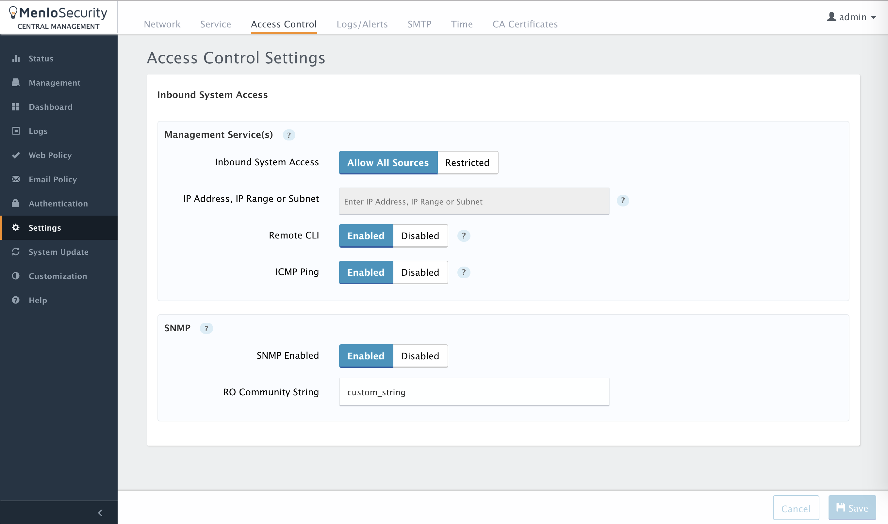Cluster Communications: Isolation Manager and Worker. Configures communication between the Isolation Master and Isolation Worker.
Figure 11. Access Control: Isolation Master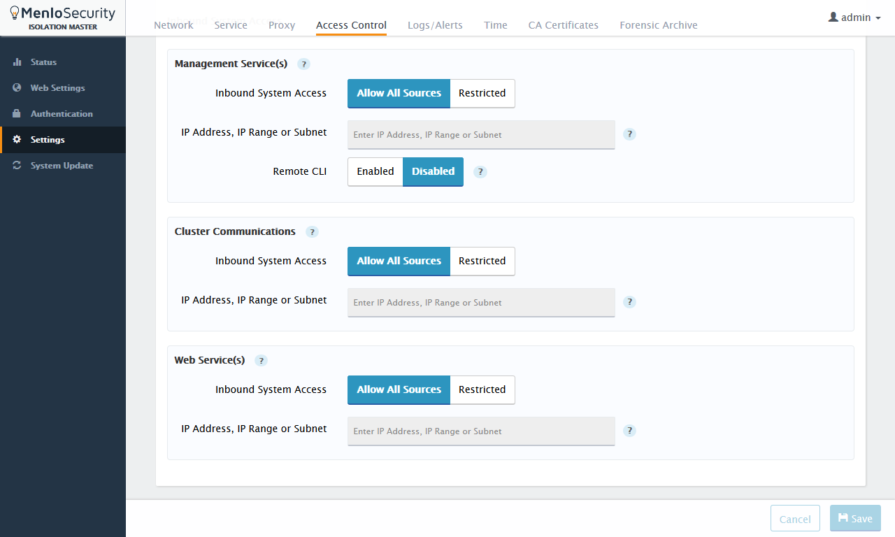Figure 12. Access Control: Isolation Worker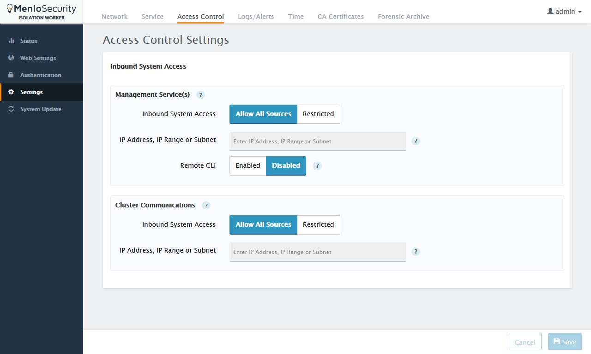Web Services: Isolation Manager only. Controls the systems allowed to connect through Menlo Security (infrastructure like desktop computers that connect through MSIP to the internet).
Logs and Alerts
The Logs and Alerts Settings pane is used on the Central Manager to configure local logging (or not use local logging). In either case, you have the option to also log to syslog (i.e., send logs to a dedicated SIEM). If you do not log locally, you will not get data into either the Dashboard or the Logs panes. The Dashboard widgets are all driven by local log information.
Local Logs: Enable this field to allow for local log collection. You can configure the log retention in number of days below.
The following is provided for all Remote Logs:
User Session Logs track who went to which sites or accessed downloads. You can send the logs in Key-Value Pair for systems like Splunk, CEF for systems like ArcSight, and LEEF for IBM QRadar.
Note
Log Event Extended Format (LEEF) has a header that includes the LEEF version, product vendor, product name, product version, and an event ID. This is followed by a string of tab-delimited key-value pairs. To configure LEEF logs to be sent to QRadar, set the syslog host in the Dashboard Log Settings pane to be the IP address or the hostname of the QRadar system. If needed, configure the protocol and port to work with the QRadar configuration. If logs are not automatically detected and sent to QRadar, consult the QRadar documentation to set up manual detection.
System Logs track what is happening on the system itself (e.g., administrator logged out of the admin interface).
Operations Logs activates additional logs for full platform monitoring (e.g., statistics around resource utilization). These fields configure the operational logging syslog output destination. See ../logging/operations-logging.dita for more information.
Operations Metrics activates stats for full platform monitoring (e.g., statistics around resource utilization). These fields configure the operational metrics host, protocol, port and prefix. See ../logging/operations-logging.dita for more information.
Alerts: These fields configure SNMP alerts (trap host, port and community string).
Note
It is possible to configure two different destinations for each syslog output (session, system and operational), allowing logs to be output to different SIEMs (Security Information and Event Management). The log outputs can be configured in different formats if required: Key-Value Pair, Common Event Format (CEF) or Log Event Extended Format (LEEF).
Note
It may take up to five (5) minutes for updated logging settings to take effect.
Notifications
The Notifications pane is used to configure the mail server and user for all scheduled reports and notifications that are emailed.
Mail Server: IP address of mail server
Port: Mail server port number. If a non-standard port will be used, select Other and enter the port number in the field to the right.
Mode: TLS mode requirement (SMTPS, SMTP StartTLS Required, SMTP StartTLS Optional, or No TLS (not recommended))
Username: Administrator username for SMTP service
Password: Administrator password for SMTP service
From Address: From address used for emailed reports and notifications
Time
The Time Settings pane is used to configure the NTP server and timezone settings. The browser and appliance current time are displayed below.
Note
It may take up to five (5) minutes for updated time settings to take effect.
CA Certificates
The CA Certificates Settings pane can be used to import, view, and manage CA certificates. These certificates will enable encrypted sessions to an upstream proxy in a manner which can be decrypted by that system for SSL inspection (i.e., upstream chaining with SSL support).
Note
To download the Menlo Security CA certificate for SSL inspection, please navigate to the following link: https://support.menlosecurity.com/instructions/cert
To add a certificate perform the following steps:
Click the Add CA Certificate button in the top right corner.
Select the Browse... button and find the desired certificate on your system.
Select the file and click Open.
Click the Add button to add the certificate. If the certificate is invalid or the wrong file type, an alert is displayed. A new, valid certificate will be added to the CA Certificates pane.
Figure 13. Invalid Certificate Warning
To view details for any certificate click the View button inline with the desired certificate. The window that appears displays the common name, organizational unit name, locality name, state/province name, country name, SHA1 fingerprint, and certificate validity time period. Click the OK button to close the window.
To delete a certificate select the Delete button inline with the certificate to be removed. A window appears to confirm deletion.
Proxy
This pane configures the network proxy settings for a web isolation appliance.
In addition, the Listen Proxy Protocol setting has been added for customers who wish to limit the hosts that are trusted to send the PROXY protocol (enter trusted IPs of load balancers in the Trusted IPs field).
You can also import an SSL bump certificate into the Isolation Master from this pane.
Forensic Archive (Isolation Appliances only)
Configures the archiving of files being accessed by users to a remote SCP (secure copy) server using public key exchange. Files being downloaded from isolated sites will be zipped and archived to this server. For security, the SCP server should be write-only (disallowing file downloads). The settings should be configured either directly on isolation appliances or in a management template.
Use this screen to discover the Menlo Security Isolation Platform Security Key. This security key is a public key generated by the Central Manager and is unique to the deployment. The MSIP Security Key is used with scp server requests to validate request authenticity. Copy and paste the key into your SCP server configuration to complete the public key exchange. This key normally goes into the ~/.ssh/authorized_keys file on Linux SCP servers in the home directory of the user configured for the scp connection.
Note
Delete other public keys before saving the browser recorder settings to ensure that multiple public keys from the same SCP server are not present.
To use this feature:
Enter the Hostname, Port and Username of the SCP server.
Optionally specify a file path on the server and a password for the zip files.
Click Fetch to attempt to establish an ssh connection to the server and obtain its public key. If you cannot automatically obtain the key, then you should obtain it from the server and paste it into the Public Key field. You should validate that the key corresponds with your SCP server's public key.
To complete the public key exchange save the template and open the Forensic Archive Settings pane (Management -> Templates -> Edit Configuration Template -> System Settings -> Forensic Archive). Copy the Menlo Security Isolation Platform Security Key (the public key generated by the Central Manager) into your SCP server.
Web Settings (Isolation Appliances only)
The Web Settings pane can be used to configure isolated browser settings for isolation appliances.
The following settings can be configured in this pane. If any changes are made, press the Save button at the bottom of the page to save the new configuration before going to another pane.
Certificates
Use these fields to manage browser certificates. The following is provided:
Invalid Certificates: Set the default action for invalid certificates: Block the page from loading automatically, or Ask User to confirm if they wish to proceed.
Strict Certificate Name Validation: Set to True if you wish for the certificate name to be validated using a list of trusted certificate authorities.
Skip Certificate Revocation Check: Set to True to optionally skip the certificate revocation check. This check may be redundant if revocation checks are already performed during SSL inspection by next-hop proxies.
Custom Name
Use the Platform Branding field to customize the name used for dialog boxes and messages generated by the system. This should be set to a recognizable name like "Secure Web" or "Web Isolation Platform."
Resource Optimization
Use these fields to optimize browser resources and configure the tab detach feature.
Resource Optimization
Max Tabs per User: Sets the maximum number of tabs a user can have open during a session.
Tab Detach: Browser tabs can be detached from DVCs (Disposable Virtual Containers) after a period of non-use so that the system can free up resources and handle more users. Detached tabs will continue to display current content (e.g., video/audio may play buffered content and animated gifs will still animate, but otherwise the page is static). As soon as user input is detected, the page is refreshed. Background tabs are refreshed when they become foreground tabs.
Profile: Sets a resource optimization profile to use for the appliance. There are three predefined optimization profiles: Relaxed, Moderate, and Aggressive. Each profile defines the amount of time that must pass before a tab is detached from the DVC. The Aggressive profile will detach tabs more frequently, whereas the Relaxed profile will detach tabs less frequently.
Custom optimization profiles may also be defined. It is recommended that one of the predefined profiles are used, and custom profiles are only used when predefined profiles do not meet your requirements. The custom profile will allow minimum timeout values of 10 minutes and a maximum value of 24 hours. Timeouts may be disabled for particular tab types.
Foreground Tab: Tab currently viewable in the browser window. The predefined profiles use a longer timeout for this tab because it is in use.
Background Tab: Tabs not in view in the browser window. The predefined profiles use a shorter timeout for these tabs because they are not in use.
Media: Tabs playing audio or video. The predefined profiles have no timeout for media tabs so that music or video are not interrupted.
Input: Tabs containing input fields such as forms. The predefined profiles use a longer timeout for tabs with input to avoid disruption when completing forms.
Header Fields
Use these fields to configure the infomration provided for header forwarding:
Include User's IP Address as X-Forwarded-For Header: If True, the user's IP address is included in x-forwarded-for header.
Populate Header With: Source used for header field
Enable X-Authenticated-User Header Forwarding: If True, header forwarding is enabled for x-authenticated users.
Web Security Gateway Prepend
Use these fields to manage web gateway security.
Restrict Prepend Access to Websites Forwarded by Web Gateway: If set to True, users cannot modify the URL to bypass the proxy security policy.
Ensure New Domains are Reauthorized by Web Gateway Policy: If set to True, users are restricted to the initial domain, and any links on the page that direct the user to a new domain are subject to the proxy security policy.
Files
These fields manage file download and upload policy. Note that if a Central Manager is used, these should be set to Allow, and the Central Manager will set the granular file and document policy for all appliances.
File Downloads: If set to Allow, file downloads are allowed (or the file policy is set by the Central Manager).
File Upload: If set to Allow, file uploads are allowed (or the file policy is set by the Central Manager).
Maximum File Size (Gb): Sets the maximum file size in Gb.
DLP Visibility
These fields configure DLP (Data Loss Prevention) visibility so isolated traffic uploads and user input can be analyzed by third party DLP appliances. The applicable traffic is formatted and replayed by the DLP service.
Enable DLP Visibility: Turns On the DLP visibility feature.
DLP Block Message: Any HTTP response other than "200 MSIP_OK" is treated as a DLP block.
Native: This shows the DLP block message from the 3rd party DLP product for both uploads and user input DLP blocks.
Menlo Block Messages: This shows the Menlo block message for both uploads and user input DLP blocks.
Data Encoding: Select either Multipart-form or URL Form for the desired data encoding to use.
System Update
The System Update panes allow an administrator to set up automatic checks for system updates and upload updates, as well as to roll the software back to a previous version or the factory default (initial installation).
Add License Key
Note
All appliances must have a valid license installed. In most cases, the same license will be used for all of the deployment. If any system updates or rollbacks fail, confirm that a valid license is configured before downloading and installing updates.
Before checking for or installing update packages, open the License Key pane (System Update -> License Key) to enter your unique license key.
Click Save to save the key on the Central Manager appliance. A message will appear if the key validates correctly or if there is an issue with the key. License keys can be restricted to allow only specific product updates and should not be distributed or shared outside your organization. The status of any licensed features is provided below.
Performing System Updates or Rollbacks
There are two types of updates which can be applied: full system updates via the Menlo Security Update servers or hot patch updates from a file uploaded to the system. All appliances, including the separately licensed email attachment worker, can be centrally upgraded from the Central Manager.
To perform a system update from the Menlo Security Update servers:
Confirm the License Key has been entered.
Check the Check For Updates Automatically checkbox. When updates are available, a message is displayed in this field. To immediately check for an update, click the Check For Update button.
If an update is available, a message appears in the pane.
To update the system, click the Download button. After running the update, the appliance will restart automatically if it needs to do so in order to complete the update.
To apply a Hot Patch from an Update Package:
Confirm the License Key has been entered.
Click the Browse... button to find the package file on your system. Click Upload to continue.
Click the Update button and select Apply to confirm the change.
The appliance will be restarted.
Note
In some cases a web or email isolation appliance will ask if it should come up in Maintenance Mode which means it won't announce itself as available to start taking connections. This mode can be changed by logging into the appliance and clicking Exit Maintenance Mode. This control helps make sure systems being worked on in a load balancing scenario don't start taking sessions before you have fully completed your upgrade.
To Rollback to a previous version, use the Rollback Version pull-down menu:
Determine the rollback version you wish to use:
To return to a version with saved settings, select the desired Version number from the menu.
To return to the factory default settings (all user-entered settings will be lost), select Factory Reset from the menu.
Click the Rollback button.
Enabling New Features After a System Update
Customers must explicitly "opt-in" to use new features that are added to the cloud and on-prem system updates. Features such as the custom block page will not take effect until after the admin saves and publishes the change.
Customization
Use the Customization pane to customize the block page used when the Isolate appliance blocks suspicious web pages. Customers can customize the warning message and button text, add a link to your company policy, and define the CSS styles and logo used in the banner or block page.
Note
The Email Customization pane is only used with Menlo Security Email Isolation; refer to email_admin_essentials.dita for details.
To perform customization:
Log into the Administrator Panel, and open the Web Customization pane (Customization -> Web). Customization is enabled by default.
Select the radio button for the desired level of customization:
Basic: Use the the default block page template and modify it using the settings provided on the Web Customization pane.
Advanced: Create a custom block page by entering HTML code in the box that appears.
For Basic customization, enter the desired text/links in the following sections:
Block Page Contents: Defines the heading and text used in the block page.
Custom Link for Company Policy: Adds a link to your company policy to the block page.
Block Page Theme: Use the menu to select a color theme (yellow, red, or white and silver) to use with the block page. To use a different color/font scheme and add your company logo, check the Setup Custom Settings checkbox and enter the desired settings in the new fields that appear.
If desired, click the Preview button to preview the block page.
Figure 14. Example Block Page Custom SettingsSelect the Reset button to return to the last saved settings, or select Save Changes to save the new settings.
Select Publish to implement the new customization.